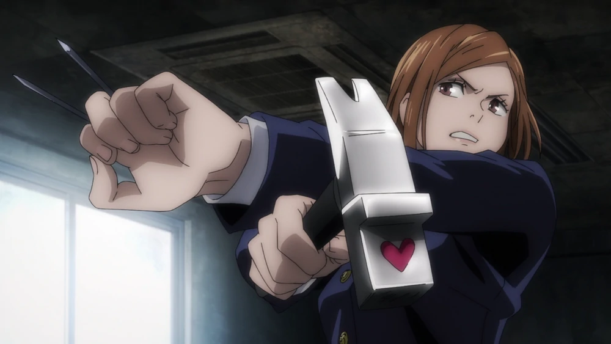
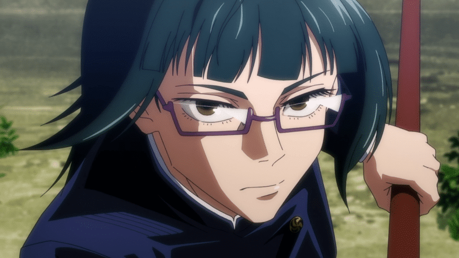
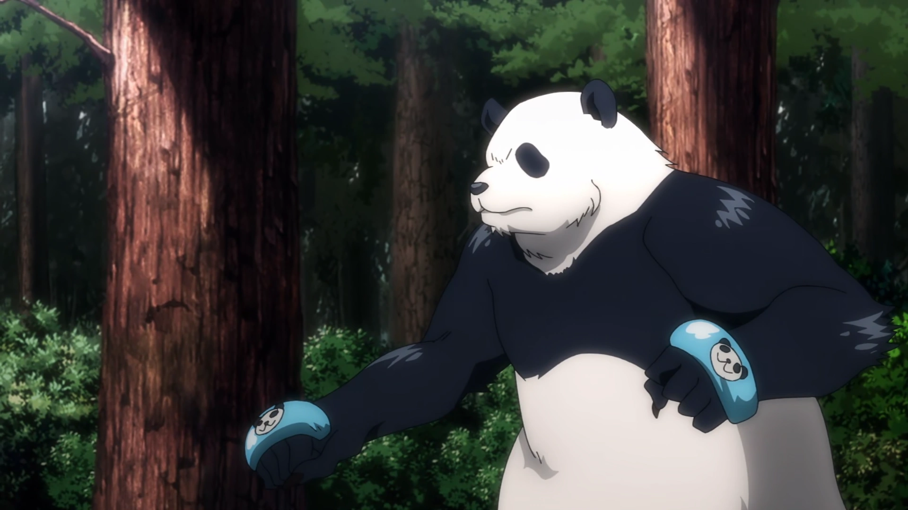
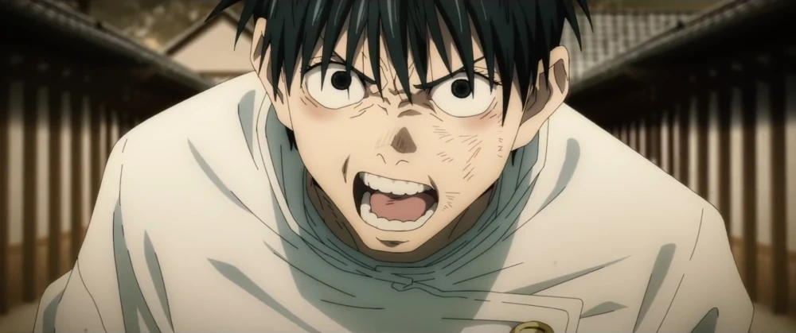
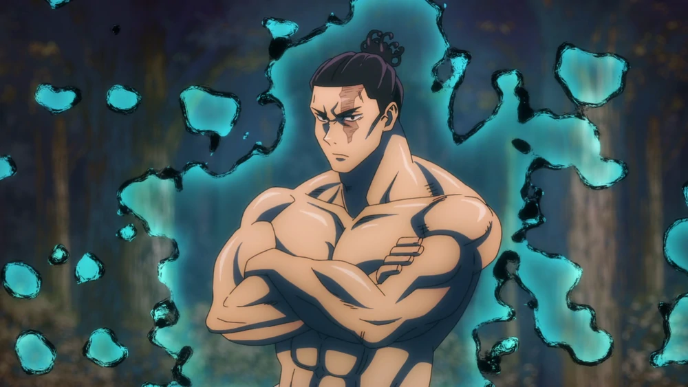
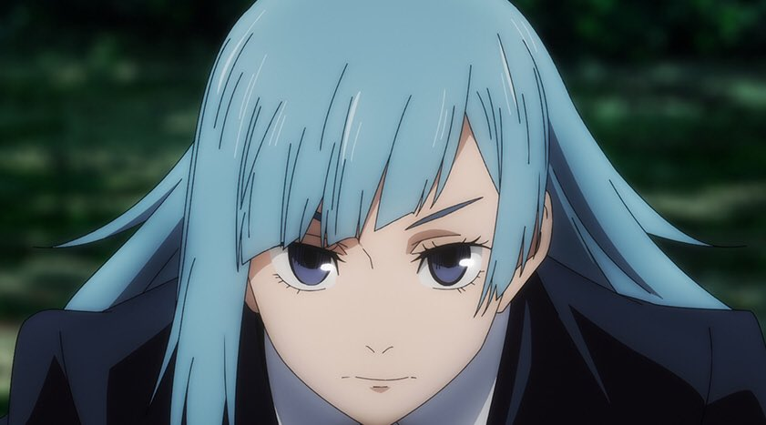

Yuji Itadori
Yuji Itadori is the main protagonist of the Jujutsu
Kaisen series. He is the son of Jin Itadori and
grandson of Wasuke Itadori who was living a normal
life until he encountered Megumi and ate one of
Sukuna's fingers. After becoming Sukuna's vessel,
Yuji began attending Tokyo Jujutsu High.

Megumi Fushiguro
Megumi Fushiguro is the deuteragonist of the Jujutsu
Kaisen series. Megumi entered Jujutsu High as a
Grade 2 sorcerer and is considered to have high
potential. Megumi inherited the Ten Shadows
Technique, which is an inherited technique that
ispassed down in the Zenin Family.

Nobara Kugisaki
Nobara Kugisaki is the tritagonist of the Jujutsu
Kaisen series. She is a first-year student and grade
3 jujutsu sorcerer at Tokyo Jujutsu High. Nobara
employs the straw doll technique. Her technique
involves utilizing jujutsu through a set of tools,
which include a hammer, nails, and a straw doll.

Maki Zenin
Maki Zenin is a major supporting character in
Jujutsu Kaisen. She is currently a second-year at
Tokyo Jujutsu High. Maki was born as a non-sorcerer
to one of the Big Three Sorcerer Clans, the Zenin
Clan. As a result of being born a non-sorcerer Maki
was constantly mistreated by her family.

Toge Inumaki
Toge Inumaki is a descendant of the Inumaki clan who
inherited the rare and powerful cursed speech
technique. This prevents Toge from speaking normally
so he's developed his own unique speech pattern to
avoid cursing others. Toge is a semi-grade 1 jujutsu
sorcerer and second-year at Tokyo Jujutsu High along
with Yuta, Maki, and Panda.

Panda
Panda is not actually a panda, he's an Abrupt
Mutated Cursed Corpse, the most advanced of his
kind. Panda is a grade 2 sorcerer who was created by
Masamichi Yaga. Panda is currently a second-year
student at Jujutsu High. Due to Panda's natural
affinity for jujutsu he is capable of exorcising
curses based solely on his physical abilities.

Yuta Okkotsu
Yuta Okkotsu is a major supporting character in the
Jujutsu Kaisen series and the main protagonist of
it's prequel series, Jujutsu Kaisen 0: Jujutsu High.
He was initially a special grade cursed human
haunted by his late childhood friend, Rika Orimoto.
Yuta is one of only four special grade sorcerers
recognized by Jujutsu High.

Aoi Todo
Aoi Todo is a supporting character in the Jujutsu
Kaisen series. He is a third-year student at Kyoto
Jujutsu High School and a grade 1 jujutsu sorcerer.
Aoi is an exceptionally powerful sorcerer,
undoubtedly one of Jujutsu High's strongest
students. He obtained the rank of a grade 1 jujutsu
sorcerer as a student despite coming from a
non-sorcerer family.

Mai Zenin
Mai Zenin is a character in the Jujutsu Kaisen
series. She was a second-year at student at Kyoto
Jujutsu High, member of the Zenin clan, and the
younger twin sister of Maki Zenin. Mai possesses
above average cursed energy for a human but less
than the normal sorcerer.However, she nor Maki were
able to gain an Inherited Technique of the Zenin
clan.

Noritoshi Kamo
Noritoshi Kamo is a third-year at Kyoto Metropolitan
Curse Technical College and heir to the head of the
Kamo clan. Noritoshi is a semi-grade 1 sorcerer with
the ability to use the Kamo Family's acclaimed
Inherited Technique: Blood Manipulation. He is a
skilled marksman who incorporates jujutsu into his
archery.
Kokichi Muta
Kokichi Muta is a second-year at Kyoto Jujutsu High
using Ultimate Mechamaru as his proxy to attend
school. Kokichi himself could not due to the sickly
and fragile body he was born with as a result of his
Heavenly Restriction. As a result of his Heavenly
Restriction, Kokichi's cursed energy was vast enough
to cover the entire nation of Japan.

Momo Nishimiya
Momo Nishimiya is a character in the Jujutsu Kaisen
series. She is a third-year student at Kyoto Jujutsu
High and a semi-grade 2 jujutsu sorcerer. Momo uses
an innate technique called tool manipulation. She
can telepathically control her broom, allowing her
to levitate it independently of herself.

Kasumi Miwa
Kasumi Miwa is a second-year at Kyoto Jujutsu High.
Kasumi was born in Tokyo, coming from a poor family
with two younger brothers. In Junior High, she met a
mentor who would allow her to become a jujutsu
sorcerer. Although she had never held a sword
before, she trained so that she wouldn't be a burden
to her mother.